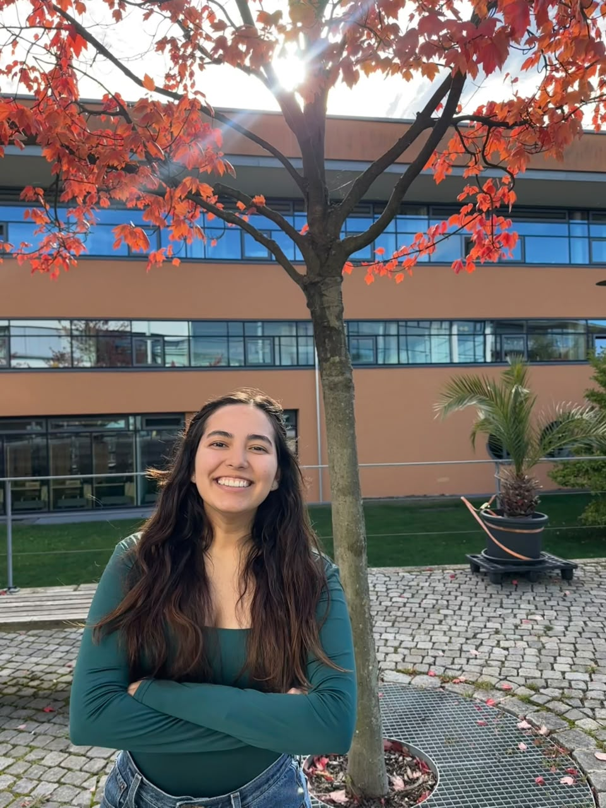

ROS 2 · Gazebo · Mobile robotics
Modular Swarm Explorer
A team project exploring how modular mobile robots can dock, navigate and map their surroundings. I contributed to the mechanical design and simulation integration.
View project repositoryI’m an M.Sc. student in Artificial Intelligence and Robotics at Hof University. I enjoy turning ideas into practical systems through simulation, mechanical design and hands-on testing.

Use the arrows on a project card to browse photos and videos from its development.
A team project exploring how modular mobile robots can dock, navigate and map their surroundings. I contributed to the mechanical design and simulation integration.
View project repository

A Crazyflie micro-drone project focused on flight tests, hand-motion control and practical hardware troubleshooting with Crazyradio PA.


My undergraduate thesis at IPN: a cable-driven, 3D-printed hand designed to flex its fingers. The work combined calculations, design, fabrication and assembly.
An environmental project involving asphalt, developed while participating in an international initiative that supports women in STEM.
A convolutional neural network trained to classify ten CIFAR-10 image categories. Includes model training, evaluation and prediction visualization.
View project repositoryThree hands-on Arduino exercises exploring keypad inputs, motion and ultrasonic sensing, and servo/LED control.
View project repositoryAn educational SECOM manufacturing-data case study exploring imbalanced classification, preprocessing and failure-detection metrics.
View project repository
A visual comparison of linear, RBF and polynomial SVM kernels, with cross-validated hyperparameter optimization on synthetic data.
View project repositoryExperiences that connect engineering, learning and community.
I joined a DAAD podcast recording in Cologne to share my experience as a Hof University student in Germany.


I volunteered at a board-game night at Hof University, helping create a welcoming space for students to connect.

I took part in a mentorship program that created opportunities to learn from mentors and build an international network.
An academic opportunity that broadened my international perspective and motivation to keep developing as an engineer.

A learning and community experience that reflects my interest in collaboration, innovation and continuous growth.
Current studies and learning milestones.
Asociación de Robótica Aplicada (ARACT)
M.Sc. studies at Hof University of Applied Sciences.
Add further courses, providers and certificate links here.